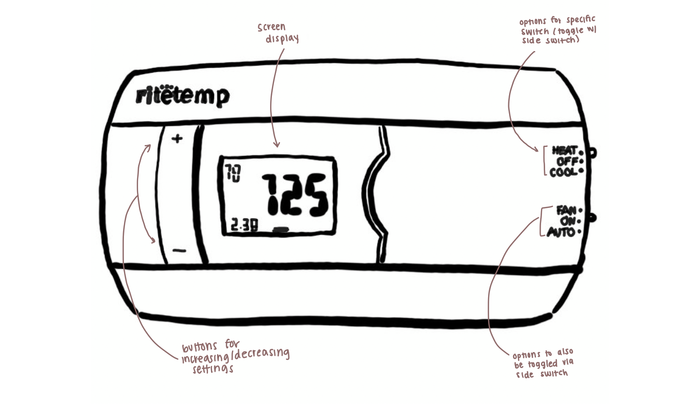
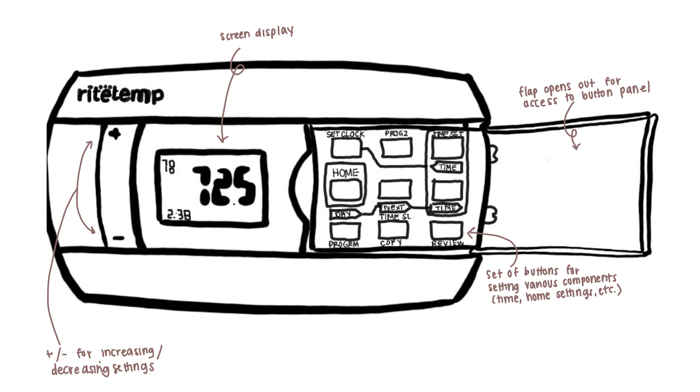
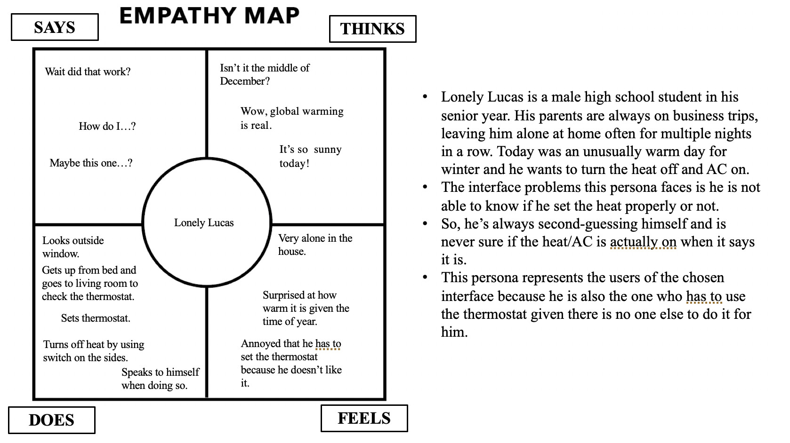
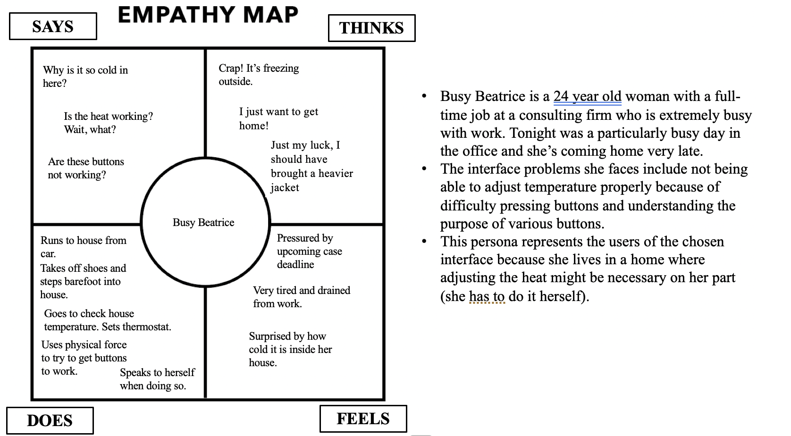
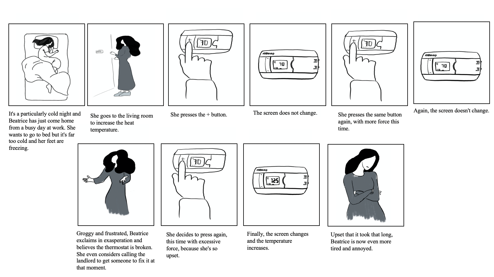

PERSONAS
THE INTERFACE
The interface I chose for this project was a house thermostat. It is meant for adjusting the internal temperature of a home via various switches and buttons. Most prominent are the +/- buttons that the user presses to change the temperature.


THE USERS
I interviewed 2 college students living in off campus housing and 1 high school student living at home. I chose these users because they were all familiar with needing to adjust temperatures (either through living in dorms or on off campus housing) and it was a common
THE INTERVIEWS
Questions
- What are you thinking while looking at this interface? Any first impressions or things that jump out to you?
- Where do you start when going about changing the set temperature?
- Can you talk me through your steps and thought process behind those steps?
- Was anything surprising about this interface or did not perform as you might have expected? What things? Why?
- What were the easiest and hardest things to accomplish with this interface? Why?
- How successful or unsuccessful do you feel you were at accomplishing this task? Why?
- How long do you think this process took you to complete? (*I actually timed the interaction*)
- Would you rate this task as relatively easy or hard to accomplish? Why?
- Various follow up questions were also asked, for example: You exclaimed out loud/ laughed out loud when pressing the various buttons and switches on the interface. What made you react this way?
User 1 Observations and Intervew Summary
- Verbal exasperation; frustration communicated through body language and verbal language as well.
- Physical force instilled to try to get the interface to work.
- Squinting to read different buttons (too small)
- Repeating same action when interface did not respond initially (with increasing force each time)
- Quick to press +/- buttons; hesitant to press buttons in panel
- When nothing occurred on screen (non changes on screen), pressed random buttons until something did change then stopped to see what changed
From the get go, the user expressed that the interface was difficult to read (said the font was too small and not very clear). This user also expressed frustration at how difficult it was to get he interface to do what it actually needed to (increase temp on screen when + button pressed and decrease temp when - button pressed). Felt that they were unsuccessful in completing task (even if they eventually set the temp correctly) because it was too much exertion ( mentally and physically).
User 2 Observations and Interview Summary
- Very verbal; asked questions throughout the whole process (wait does this change time? Why are there two time buttons?).
- Also used physical force (leaning in with body) to press +/- buttons, which did not register with a regular press
- Opened flap after pressing +/- buttons did nothing
- Stared at interface with the flap open for at least one minute then started to press buttons starting with HOME.
- Much slower than first user in terms of clicking speed; read/stared at screen and verbally asked questions a lot more than first user.
This user said they were asking questions out loud to try to make sense of the interface.
They were surprised that the +/- buttons did not depress and thought that maybe they had to press harder to get them to work.
Once they opened the flap, they were overwhelmed with the number of buttons and were not sure what the different labels meant.
Expressed that they did not feel successful at accomplishing task because of how much time it took for them to change or set something they thought should take at most a minute.
They thought the entire process to complete the task took 12-15 minutes but actually took 5 minutes to complete.
User 3 Observations and Interview Summary
- After each button pressed, they waited a few seconds before pressing another button or pressing the same button again.
- Tried toggling the side switches and laughed out loud when they didn't move to all the options.
- After a few tries, verbally communicated their confusion (Wait what? What is going on? Is this broken?)
The user initially said they did not think it was very difficult and that for the most part, the interface was relatively easy to understand.
However, when attempting to use it, the user said there was no indication that the interface registered their actions which made the user wonder if they had pressed the button correctly or if there was something else they needed to do first.
After the first few tries of it not working, they thought that the interface was broken but when it eventually worked, they said that they were not sure how to actually use the interface properly or if they were doing something wrong.
Also they did not think they were successful with completing the task of changing the set temperature because it took too much time and effort than they thought it should have.
EMPATHY MAPS


STORYBOARD

Notes: I used a style sheet from W3 schools (linked in code as additional style sheet). I also looked at W3 school tutorials for implementing various elements (tags, bulleted lists, image formatting, etc.). There was also a W3 schools HTML template that I liked the formatting of, but did not copy because it was too complicated and I didn't undertstand what the HTML/CSS was (I linked the template in my code as a note). However, I tried to implement similar stylistic principles, such as fonts and header formatting.